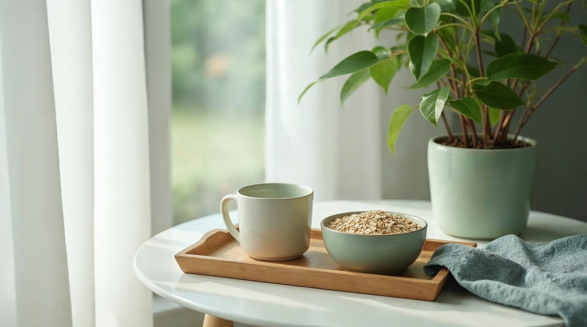
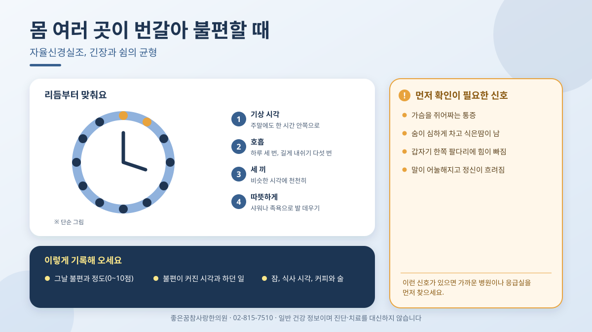

이종호 한의사 감수좋은꿈참사랑한의원 대표원장 (한의사 면허번호 19769)발행 2026-11-26 · 수정 2026-11-26
이 글의 차례
진료실 책상 위에 서류 봉투 몇 개가 놓이는 날이 있습니다. 심장 초음파, 위 내시경, 뇌 사진, 혈액 검사 결과지입니다. 모두 특별한 이상이 없다는 내용인데, 봉투를 들고 오신 분들은 하루에도 몇 번씩 몸이 불편하다고 하십니다. 아침엔 가슴이 두근거리고, 점심엔 체한 듯 답답하고, 저녁엔 손발이 저리고 머리가 무겁다고요.
"검사에서는 다 괜찮다는데, 저는 왜 이렇게 아픈 걸까요." 이 말씀 끝에는 서운함이 묻어 있습니다. 가족에게 이야기하면 '신경성이야'라는 말만 돌아오고, 그러다 보니 내가 너무 예민한 건지, 아니면 아직 찾지 못한 큰 병이 있는 건지 마음이 오락가락합니다.
이렇게 뚜렷한 병은 찾지 못했는데 몸 여러 곳의 조절이 흔들려 불편이 번갈아 나타나는 상태를 흔히 자율신경실조라고 부릅니다. 꾀병도, 단순한 기분 탓도 아닙니다. 몸의 긴장과 쉼을 맡은 조절 장치가 균형을 잃은 흐름으로 보고 차근차근 살펴볼 수 있습니다.
자율신경실조는 어떤 상태인가요?
자율신경은 우리가 의식하지 않아도 저절로 움직이는 몸의 기능을 맡습니다. 심장 박동, 혈압, 호흡, 소화, 땀, 체온, 방광과 장의 움직임까지 모두 이 신경의 조절을 받습니다. 크게 몸을 깨우고 긴장시키는 교감신경과, 쉬게 하고 회복시키는 부교감신경이 서로 균형을 맞추며 일합니다.
낮에 일할 때는 교감신경이 조금 더 앞에 서고, 밤에 쉬거나 밥을 먹은 뒤에는 부교감신경이 앞에 섭니다. 이 바통 터치가 매끄러우면 몸은 필요할 때 힘을 내고, 쉴 때 회복합니다. 자율신경실조는 이 바통 터치가 엉켜 쉬어야 할 때도 긴장이 풀리지 않거나, 반대로 힘을 내야 할 때 기운이 빠지는 상태를 말합니다.
그래서 불편이 한 곳에 머물지 않고 여러 곳으로 옮겨 다닙니다. 오늘은 심장, 내일은 위장, 모레는 머리처럼요. 검사는 주로 각 장기의 구조를 보기 때문에 이상이 없다고 나올 수 있지만, 장기들을 조율하는 흐름이 흔들리면 불편은 분명히 느껴질 수 있습니다.
몸 여러 곳에 어떤 불편이 나타나나요?
말씀하시는 불편은 사람마다 다르지만 대략 몇 갈래로 묶어 볼 수 있습니다. 하나만 있는 경우는 드물고, 두세 가지가 번갈아 또는 함께 나타나는 경우가 많습니다.
- 가슴: 두근거림, 가슴 답답함, 숨이 덜 쉬어지는 느낌
- 머리: 어지럼, 머리가 무겁고 멍함, 귀 먹먹함
- 속: 체한 듯한 더부룩함, 메스꺼움, 설사와 변비가 번갈아 옴
- 손발: 차가움, 저림, 땀이 많거나 없음
- 체온: 얼굴로 열이 오르는데 손발은 참, 갑자기 땀이 남
- 잠: 잠들기 어렵거나 자주 깸, 자도 개운하지 않음
이 불편들은 날씨, 잠, 긴장, 생리 주기, 계절에 따라 커졌다 작아졌다 합니다. 어떤 날은 거의 괜찮다가 어떤 날은 하루 종일 몸이 말을 듣지 않는 것처럼 느껴지기도 합니다. 이 들쭉날쭉함 자체가 자율신경실조의 특징이기도 합니다.
왜 자율신경의 균형이 흔들릴까요
가장 흔한 배경은 오래 이어진 긴장입니다. 일의 압박, 돌봄, 관계의 갈등, 경제적인 걱정처럼 쉽게 끝나지 않는 부담이 몇 달, 몇 해 이어지면 몸은 늘 비상 상태로 지내게 됩니다. 교감신경이 쉬지 못하고 계속 앞에 서 있으니, 회복을 맡은 쪽이 일할 틈이 줄어듭니다.
잠과 생활 리듬도 큰 몫을 합니다. 늦게 자고 들쭉날쭉 일어나거나, 교대근무와 야근으로 낮밤이 자주 바뀌면 자율신경의 하루 리듬이 흐트러집니다. 끼니를 거르고 커피로 버티는 생활은 이 흔들림을 더 키우기도 합니다.
몸의 변화가 계기가 되는 경우도 있습니다. 출산 뒤, 갱년기, 큰 병을 앓고 난 뒤, 갑자기 체중이 크게 변한 뒤처럼 몸이 새로운 균형을 찾아가는 시기에 자율신경이 잠시 갈피를 잃기도 합니다. 계절이 바뀌는 환절기에 불편이 커지는 분도 많습니다.
한의학에서는 이런 상태를 기운의 흐름이 막히거나 위아래로 고르지 못한 것으로 봅니다. 위로는 열이 몰려 얼굴이 달아오르고 가슴이 두근거리는데, 아래와 손발은 차가운 모습이 대표적입니다. 진료에서는 이 흐름이 어디에서 막혀 있는지를 맥과 몸의 온도, 소화로 함께 살핍니다.
큰 병을 놓치지 않으려면 무엇을 확인하나요
자율신경실조라는 이름은 다른 원인을 충분히 살펴본 뒤에 붙이는 것이 좋습니다. 두근거림은 갑상선이나 부정맥과, 어지럼은 빈혈이나 귀의 문제와, 손발 저림은 당뇨나 목·허리 디스크와도 겹쳐 보일 수 있기 때문입니다.
그래서 새로 생긴 불편이 있거나 불편의 모습이 이전과 달라졌다면, 해당 진료과에서 먼저 확인해 보시길 권합니다. 이미 검사를 받으셨다면 그 결과를 바탕으로 한의원에서는 몸 전체의 균형을 함께 살필 수 있습니다.
검사를 너무 많이 받는 것도 마음을 지치게 합니다. 같은 검사를 여러 병원에서 되풀이하기보다, 믿을 만한 진료과 한 곳을 정해 정기적으로 확인하고, 그 사이의 생활과 몸의 흐름을 한의원에서 나눠 살피는 쪽이 덜 지치는 길일 수 있습니다.
불안장애, 화병, 만성피로와는 어떻게 다른가요
불안장애는 걱정과 두려움이 중심에 있고, 몸의 불편은 그 걱정을 따라 나타나는 경우가 많습니다. 자율신경실조는 뚜렷한 걱정이 없는 날에도 몸의 불편이 먼저 찾아온다는 분이 많습니다. 다만 둘은 서로를 키우기 쉬워서 함께 살피는 경우가 많습니다.
화병은 억울함과 분노를 오래 참으면서 가슴이 치밀고 열이 오르는 모습이 중심입니다. 만성피로는 쉬어도 풀리지 않는 피곤이 가장 앞에 섭니다. 자율신경실조는 여러 기관의 조절이 함께 흔들리며 불편이 옮겨 다닌다는 점이 다릅니다.
이름이 무엇이든 진료실에서 가장 중요하게 보는 것은 지금 어떤 불편이 언제, 어떤 조건에서 커지는지입니다. 이름보다 흐름을 먼저 보면 생활에서 무엇을 바꿔 볼지도 함께 보입니다.
먼저 이렇게 여쭙니다
처음 오시면 저는 대략 이런 순서로 여쭙니다. 미리 생각해 오시면 이야기가 수월해집니다.
- 지금 가장 불편한 것 세 가지는 무엇인가요?
- 불편이 처음 시작된 때와 그 무렵 생활의 변화는 무엇인가요?
- 하루 중 언제, 어떤 상황에서 불편이 커지나요?
- 지금까지 받으신 검사와 그 결과는 어떤가요?
- 잠, 식사 시각, 커피와 술은 어떠신가요?
- 지금 드시는 약과 영양제는 무엇인가요?
모든 불편을 한꺼번에 이야기하려 하면 진료 시간이 모자라고 마음도 더 급해집니다. 가장 불편한 세 가지를 골라 오시면, 그 세 가지가 어떤 흐름으로 이어져 있는지부터 함께 풀어 갑니다.

일상에서 먼저 해 볼 수 있는 것
자율신경은 의식으로 바로 조절할 수 없지만, 생활 리듬과 호흡을 통해 간접적으로 말을 걸 수 있습니다. 거창한 변화보다 매일 같은 시각에 반복하는 작은 습관이 균형을 되찾는 데 더 도움이 될 때가 많습니다.
- 일어나는 시각을 주말에도 한 시간 안쪽으로 맞추기
- 숨을 4초 들이쉬고 6초 내쉬기를 하루 세 번, 다섯 번씩 하기
- 세 끼를 비슷한 시각에 천천히 먹기
- 커피는 오전에 한두 잔으로 줄이기
- 하루 20~30분 걷기
- 잠들기 한 시간 전에는 화면을 멀리 두고 조명 낮추기
호흡에서 중요한 것은 내쉬는 숨입니다. 숨을 길게 내쉴 때 쉬게 하는 신경이 조금 더 앞에 섭니다. 두근거림이나 답답함이 올 때 억지로 깊이 들이쉬려 하기보다, 입을 살짝 오므리고 천천히 내쉬는 쪽에 마음을 두세요.
따뜻한 물로 샤워하거나 족욕을 하는 것도 몸에 쉬어도 된다는 신호를 줍니다. 손발이 차고 얼굴로 열이 오르는 분이라면 발을 따뜻하게 하는 것만으로도 위아래 온도 차가 조금 줄어드는 것을 느끼실 수 있습니다.
불편에 너무 오래 귀 기울이지 않는 연습도 필요합니다. 몸의 작은 신호를 하나하나 살피다 보면 오히려 그 신호가 더 크게 느껴집니다. 하루에 몸을 점검하는 시간을 정해 두고, 나머지 시간에는 할 일과 사람에게 마음을 돌려 보세요.
불편이 올 때 그 자리에서 해 볼 것
두근거림이 오면 하던 일을 잠시 멈추고 의자에 등을 기대 앉으세요. 어깨를 한 번 올렸다 툭 떨어뜨리고, 숨을 길게 내쉬기를 다섯 번 합니다. 손을 가슴이나 배에 올려 숨이 오르내리는 것을 느끼면 마음이 숨에 머무르기 쉬워집니다.
속이 답답하고 체한 듯할 때는 허리띠를 느슨하게 하고 몇 분 천천히 걸어 보세요. 따뜻한 물을 몇 모금 나눠 마시는 것도 도움이 됩니다. 바로 누우면 오히려 더 답답해질 수 있어 잠시 서 있거나 걷는 쪽을 권합니다.
어지럽거나 머리가 멍할 때는 앉은 자리에서 고개를 천천히 내리고, 일어설 때는 걸터앉아 숨을 고른 뒤 일어서세요. 물을 하루 동안 충분히 드셨는지도 함께 돌아보시면 좋습니다.
가족과 직장에서 이해받기
자율신경실조는 겉으로 잘 드러나지 않아 주변의 이해를 받기 어렵습니다. 그럴 때는 '신경성'이라는 말 대신 "몸의 긴장 조절 장치가 지쳐 있어서 회복 중"이라고 설명해 보세요. 이해받는 느낌만으로도 몸의 긴장이 조금 풀리는 분이 많습니다.
직장에서는 모든 사정을 설명하기 어려울 수 있습니다. 그럴 때는 점심 뒤 10분 걷기, 오후 커피 대신 따뜻한 물처럼 혼자 지킬 수 있는 작은 약속부터 정해 두세요. 가족에게는 불편이 큰 날을 미리 알려 집안일을 잠시 나누는 것도 회복을 돕는 방법입니다.
무엇보다 나 자신에게 너그러워지는 연습이 필요합니다. 몸이 불편한 날 해내지 못한 일을 탓하기보다, 그날 버텨 낸 것을 먼저 알아봐 주세요. 스스로를 몰아세우는 마음도 자율신경에게는 또 하나의 긴장이 되기 때문입니다.
한의원에서 함께 살필 수 있는 경우
- 검사에서 특별한 이상은 없는데 두근거림, 어지럼, 소화불량이 번갈아 오는 경우
- 얼굴로 열이 오르는데 손발은 차고 땀 조절이 잘 안 되는 경우
- 잠이 얕고 자주 깨며 아침에 개운하지 않은 경우
- 긴장하거나 날씨가 바뀌면 불편이 커지는 경우
- 다른 진료과 진료와 함께 몸 전체의 균형을 살피고 싶은 경우
좋은꿈참사랑한의원에 오시면 모든 분의 맥을 먼저 짚고, 배와 손발의 온도, 목과 어깨의 굳은 정도, 배의 긴장을 직접 만져 보며 확인합니다.
진찰한 내용을 바탕으로 잠과 호흡, 식사 리듬에서 바꿔 볼 것 하나와 함께 침, 온열 관리, 한약 상담 가운데 지금 상태에 맞는 것을 정합니다. 한약을 상의할 때는 드시는 약을 모두 확인하고 신중하게 정합니다. 다른 진료과에서 처방받은 약은 처방한 선생님과 상의 없이 멈추지 않습니다.
임신 중이거나 임신을 준비하고 계시다면 진료 전에 먼저 알려 주세요. 이 시기에는 산부인과와 상의하면서 진료 방향을 정합니다.
이렇게 기록해 오시면 상담이 쉬워집니다
불편이 옮겨 다니는 만큼 기록이 큰 힘이 됩니다. 2주 정도 아래 내용을 간단히 적어 보세요.
- 그날 나타난 불편과 정도(0~10점)
- 불편이 커진 시각과 그때 하던 일
- 잠든 시각과 깬 시각, 밤에 깬 횟수
- 식사 시각과 커피, 술
- 긴장했던 일, 날씨, 생리 주기
기록을 나란히 놓으면 잠을 설친 다음 날, 끼니를 거른 날, 긴장했던 날에 불편이 몰려 있는 경우가 많습니다. 그 연결이 보이면 막막했던 불편이 조금은 다룰 수 있는 것으로 느껴지기 시작합니다.
몸의 균형은 천천히 돌아옵니다
자율신경의 균형은 몇 달, 몇 해에 걸쳐 흔들려 온 경우가 많아서 되찾는 데에도 시간이 걸립니다. 한동안 괜찮다가 다시 흔들리는 날이 오더라도 실패가 아니라 회복의 한 과정으로 봐 주셨으면 합니다.
균형이 돌아오는 신호는 대개 작게 옵니다. 아침에 눈뜨는 것이 조금 덜 힘들어지거나, 불편이 와도 가라앉는 시간이 짧아지는 식입니다. 그런 변화를 기록에 함께 적어 두세요.
이번 주에는 일어나는 시각 하나만 고정해 보세요. 다음에 오시면 2주 동안의 불편 기록부터 함께 펼쳐 보겠습니다.
이런 증상은 먼저 확인이 필요합니다
- 가슴을 쥐어짜듯 아프거나, 식은땀과 함께 가슴이 답답하거나, 숨이 심하게 찬 경우
- 갑자기 얼굴 한쪽이 처지거나, 한쪽 팔다리에 힘이 빠지거나, 말이 어눌해지는 경우
이런 신호가 있으면 한의원보다 가까운 병원이나 응급실을 먼저 찾으세요.
함께 읽으면 좋은 글
- 불안한 마음과 몸이 긴장한 느낌은 어떻게 나눠서 이야기하나요?
- 가슴이 두근거리고 불안할 때는 어떤 점을 먼저 확인하나요?
- 충분히 쉬어도 몸이 늘 피곤한 만성피로는 어떤 점을 살펴보나요?
- 한의원 문진에서 몸의 따뜻함, 소화, 잠, 대소변, 통증은 왜 함께 묻나요?
- 평일 내내 긴장하다 주말만 되면 몸살처럼 아플 때는 어떻게 살피나요?

여쭙는 것
- 지금 가장 불편한 것 세 가지는 무엇인가요?
- 불편이 처음 시작된 때와 그 무렵 생활의 변화는 무엇인가요?
- 하루 중 언제, 어떤 상황에서 불편이 커지나요?
생활에서 해 볼 것
- 일어나는 시각을 주말에도 한 시간 안쪽으로 맞추기
- 숨을 4초 들이쉬고 6초 내쉬기를 하루 세 번, 다섯 번씩 하기
- 세 끼를 비슷한 시각에 천천히 먹기
한의원에서 함께 살필 것
- 검사에서 특별한 이상은 없는데 두근거림, 어지럼, 소화불량이 번갈아 오는 경우
- 얼굴로 열이 오르는데 손발은 차고 땀 조절이 잘 안 되는 경우
- 잠이 얕고 자주 깨며 아침에 개운하지 않은 경우
먼저 확인이 필요한 신호
- 가슴을 쥐어짜듯 아프거나, 식은땀과 함께 가슴이 답답하거나, 숨이 심하게 찬 경우
- 갑자기 얼굴 한쪽이 처지거나, 한쪽 팔다리에 힘이 빠지거나, 말이 어눌해지는 경우
한눈에 보는 표
| 구분 | 핵심 |
|---|---|
| 여쭙는 것 | 지금 가장 불편한 것 세 가지는 무엇인가요? 불편이 처음 시작된 때와 그 무렵 생활의 변화는 무엇인가요? |
| 생활에서 해 볼 것 | 일어나는 시각을 주말에도 한 시간 안쪽으로 맞추기 숨을 4초 들이쉬고 6초 내쉬기를 하루 세 번, 다섯 번씩 하기 |
| 한의원에서 함께 살필 것 | 검사에서 특별한 이상은 없는데 두근거림, 어지럼, 소화불량이 번갈아 오는 경우 얼굴로 열이 오르는데 손발은 차고 땀 조절이 잘 안 되는 경우 |
| 먼저 확인이 필요한 신호 | 가슴을 쥐어짜듯 아프거나, 식은땀과 함께 가슴이 답답하거나, 숨이 심하게 찬 경우 갑자기 얼굴 한쪽이 처지거나, 한쪽 팔다리에 힘이 빠지거나, 말이 어눌해지는 경우 |
자주 묻는 질문
검사에서 다 정상이라는데 정말 아픈 게 맞나요?
검사는 각 장기의 구조를 주로 보기 때문에, 장기들을 조율하는 흐름이 흔들린 것은 잘 드러나지 않을 수 있습니다. 느끼시는 불편은 분명히 있는 것이고, 그 흐름을 함께 살펴볼 수 있습니다.
자율신경실조는 얼마나 오래 가나요?
사람마다 흔들려 온 기간과 생활 여건이 달라 한마디로 말씀드리기 어렵습니다. 잠과 식사 리듬, 호흡 습관을 함께 챙기며 기록을 보고 흐름을 살펴 가는 것이 좋습니다.
다른 병원 약을 먹고 있는데 한약을 함께 먹어도 되나요?
드시는 약을 모두 확인하고 신중하게 정합니다. 약 봉투나 처방전 사진을 가져와 주시면 함께 살펴보고, 필요하면 처방한 선생님과 상의하시도록 안내합니다.
불편이 올 때마다 검사를 다시 받아야 하나요?
불편의 모습이 이전과 달라졌거나 새로운 증상이 생겼다면 해당 진료과에서 확인을 받으시길 권합니다. 같은 불편이 되풀이되는 경우라면 기록을 바탕으로 흐름을 먼저 살펴봅니다.
좋은꿈참사랑한의원은 재진 때 지난번 이야기부터 이어서 여쭙니다. 진료시간과 예약은 오시는 길에서 확인하세요.
어디서 상담받을 수 있나요?
좋은꿈참사랑한의원은 서울 동작구 만양로2길 2 신성빌딩 3층·5층(서울 동작구 상도동, 7호선 상도역 3번 출구 근처)에 있습니다. 한의사 3명(이종호 대표원장, 조영기 수석진료원장, 정원영 진료원장)이 진료합니다. 진료시간은 평일 09:30~20:00(점심 13:00~14:00), 토·일·공휴일 09:30~15:00이며, 방문 전 전화로 확인을 권합니다. 예약은 네이버 예약, 카카오톡 상담, 전화 02-815-7510로 받습니다.
이 글은 일반적인 건강 정보이며 개인의 진단이나 치료를 대신하지 않습니다. 증상이 있거나 복용 중인 약이 있다면 진료를 통해 확인하세요. 치료 효과는 개인마다 다를 수 있습니다.
작성 기준: 일반적으로 알려져 있는 건강 정보를 참고해 정리했습니다(대표원장 감수). 증상 기록은 1~2주 동안 하루 1회, 비슷한 시간에 적어 오시면 지난 상태와 비교하기 쉽습니다.